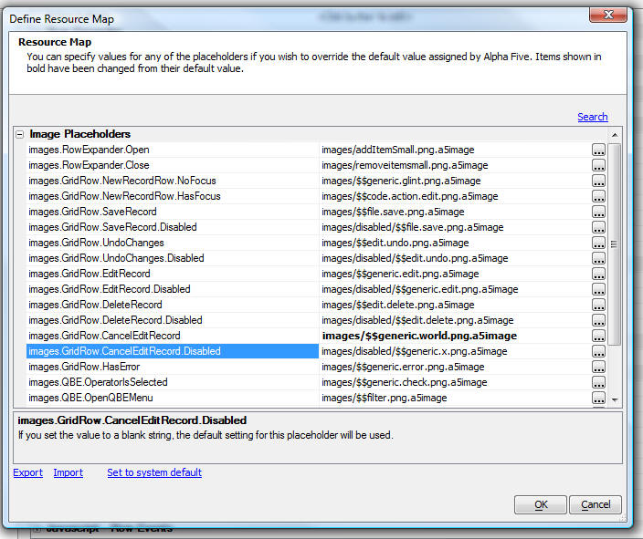

Grid Component - Customizing Icons
Many of the icons used in the Grid that were previously hard-coded to use certain images (e.g. the Row Expander icon) , can now be customized. To bring up the dialog show below, click the smart field in the 'Customize icon' property in the 'Customization' section in the 'Properties' pane. Icons shown in bold in the dialog below have been changed from their default setting. If you have defined a map that you would like to use in a different Grid, click the Export hyperlink button.Note: The list of icons show here is not the exhaustive list of icons that can be customized. Many of the icons have explicit prompts in the Grid builder.
